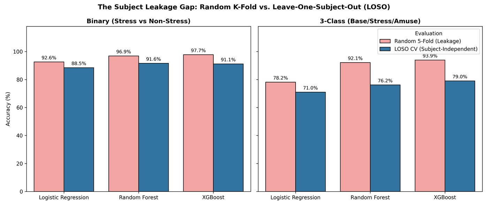
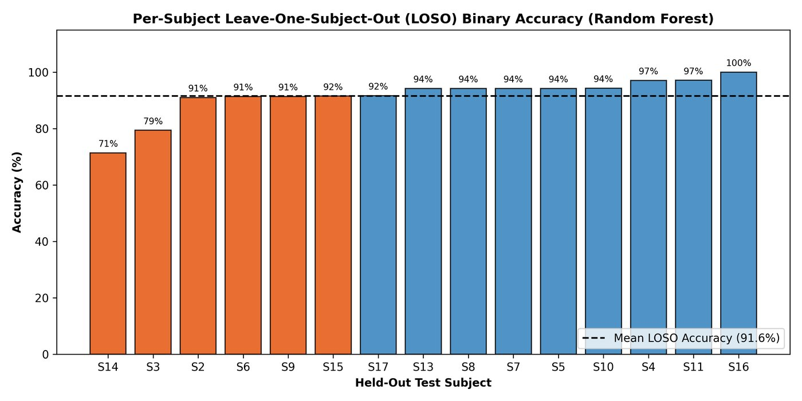
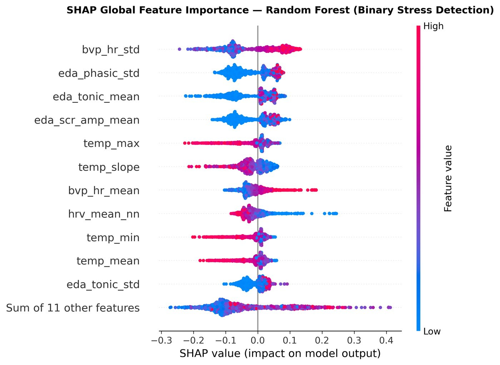
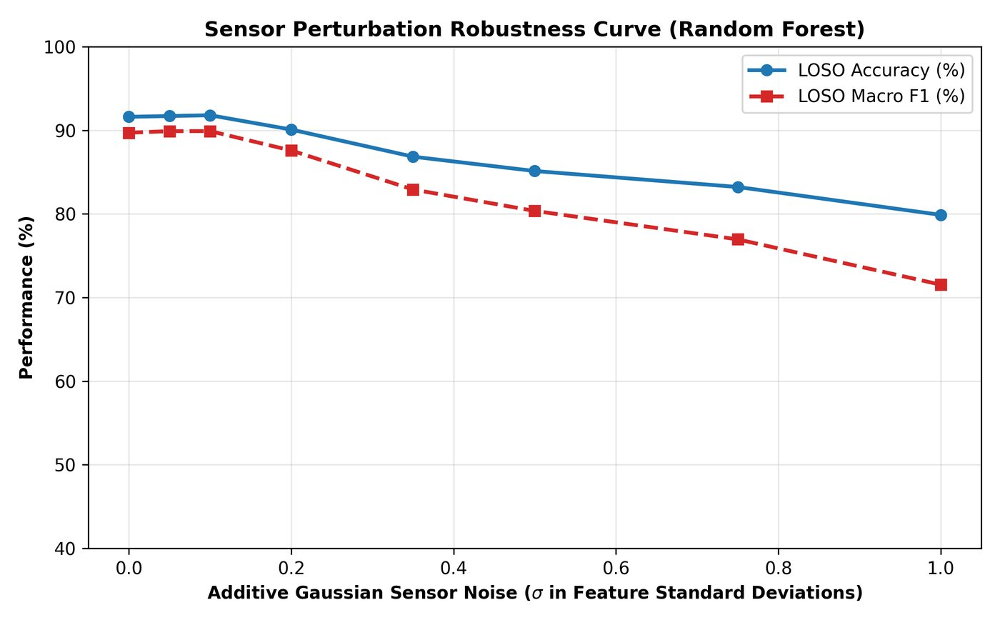
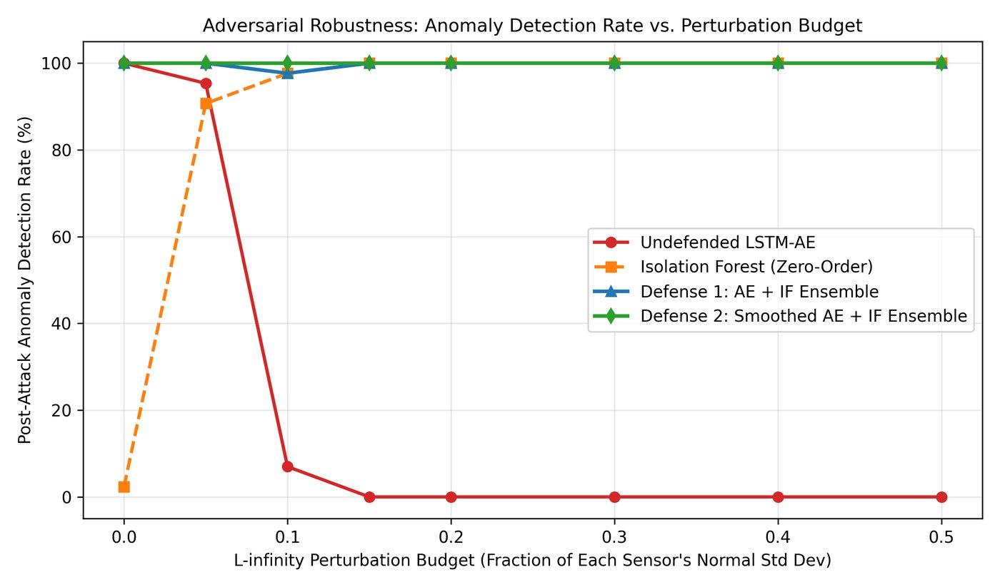
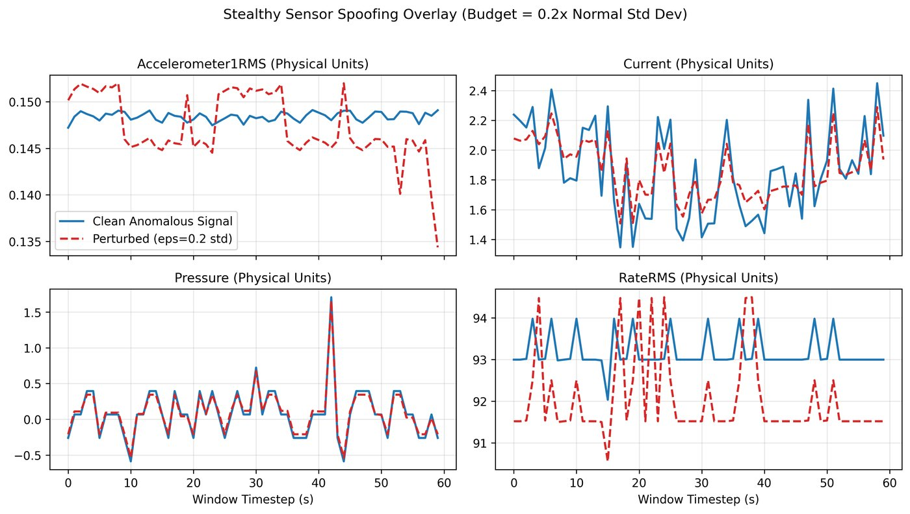
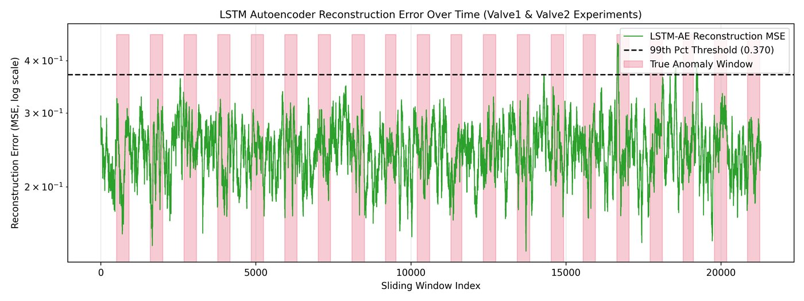
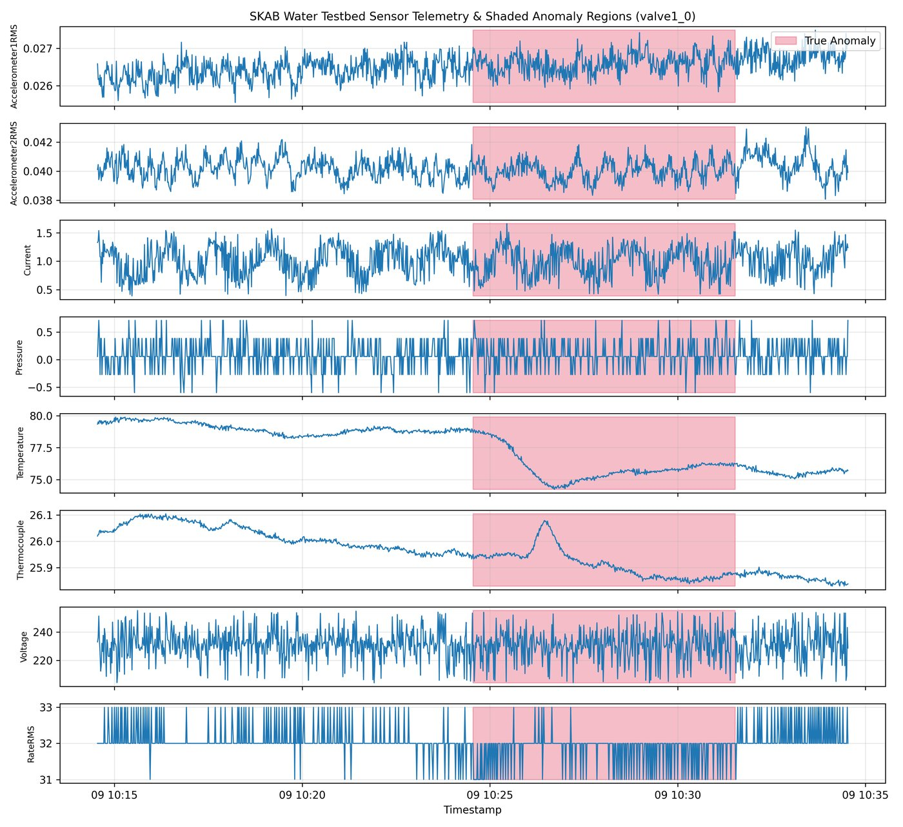

Independent Projects
Alongside my thesis, I build self-directed projects to explore the questions at the center of my research: how AI systems behave on real-world data, where they break, and how we can explain and trust their decisions. I design, build, and evaluate each project on my own, end to end, using public datasets, and each one runs fully on a CPU so anyone can reproduce it.
Each entry below gives a short summary, the key findings, and selected figures. Click any figure to enlarge it. The full code, report, and all results are on GitHub.
Explainable Stress Detection from Wearable Physiological Signals
An end-to-end pipeline that detects acute stress from wrist sensor signals (EDA, BVP, skin temperature, motion) in the WESAD dataset. I engineered 22 physiological features from 1,049 windows across 15 subjects, tested every model on people it never saw in training (leave-one-subject-out), explained predictions with SHAP, and stress-tested the model with sensor noise. This is groundwork for real-time cybersickness prediction in VR.
Key findings
- 91.6% accuracy detecting stress in unseen users (Random Forest, binary).
- Random splits inflate accuracy by up to 15.9 points because of subject leakage. Subject-wise testing is essential.
- Heart rate variability and skin conductance are the strongest stress signals.
- Holds 90.1% accuracy under moderate sensor noise (σ = 0.2).




Can You Fool an Industrial Anomaly Detector? Adversarial Security for Cyber-Physical Systems
I trained anomaly detectors on 8-sensor telemetry from a real water circulation testbed (SKAB), then played the attacker. Assuming an adversary who can tamper with sensor data before it reaches the detector, I built a gradient-based (PGD) evasion attack that hides an active valve fault while keeping every sensor within realistic physical limits. I then designed and tested layered defenses.
Key findings
- At a strict 1% false-alarm rate, Isolation Forest separated faults from normal operation far better than the LSTM autoencoder (ROC-AUC 0.81 vs 0.52).
- Of the faults the autoencoder did catch, a perturbation of only 0.15 standard deviations per sensor hid all of them.
- The attack is not stealthy to a second model. The same perturbations made Isolation Forest flag 100% of spoofed windows.
- An autoencoder + Isolation Forest ensemble kept full detection at every attack budget, showing the value of model diversity.



